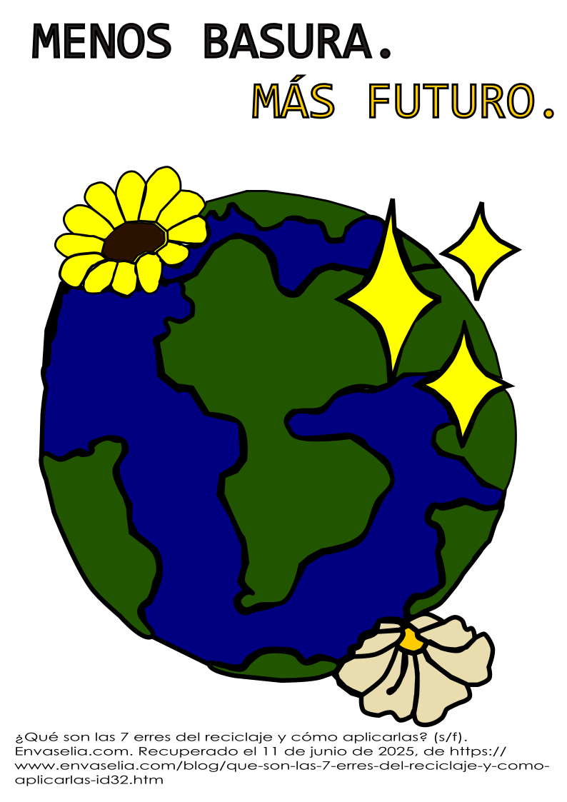

Mantener la competitividad y la sostenibilidad en las empresas es hoy una necesidad y un desafío. Para lograrlo, la economía circular propone un modelo eficiente basado en estrategias clave que minimizan el impacto ambiental y optimizan los recursos.Uno de los enfoques más efectivos es la aplicación de las 7 estrategias circulares (7Rs), un conjunto de acciones que favorecen tanto la eficiencia operativa como el compromiso ambiental de las empresas. Se han ampliado a 7: rediseñar, reducir, reutilizar, reparar, renovar, recuperar y reciclar.
Beneficios de implementar las 7Rs en empresas.
- Reducción de residuos y costes operativos.
- Mayor eficiencia en el uso de materiales y energía.
- Innovación en procesos y productos sostenibles.
- Mejora de la reputación y atracción de clientes responsables.

7 R´S.
Las 7Rs son claves que nos ayudan a consumir de forma más responsable y sostenible.
| R | Descripción. | Empresas que aplican las 7Rs. | Imagen. |
|---|---|---|---|
| Rediseñar. | Usar materiales biodegradables para conseguir un equilibrio entre rentabilidad y funcionalidad. | Interface Inc.: Rediseño modular de alfombras reciclables. |  |
| Reducir. | Generar menos residuos contaminantes, consumir menos en general. Lo más ecológico es usar menos, no reciclar lo usado. | Unilever: Optimización de envases con menos plástico. |  |
| Reutilizar. | El agua de lavar verduras puede usarse para regar plantas, ya que es un bien necesario y escaso. | Patagonia: Programa «Worn Wear» para ropa de segunda vida. | |
| Reparar. | Los objetos deben arreglarse siempre que sea posible para cumplir con esa ansiada premisa de alargar la vida útil de las cosas. | Apple: Programas para la reparación y reciclaje de sus dispositivos electrónicos. |  |
| Renovar. | No cambiar cosas viejas por nuevas, si no actualizar los objetos para darles un nuevo uso. | Dell: Extensión de la vida útil de equipos informáticos. |  |
| Recuperar. | Volver a descubrir cosas que se tienen relegadas sin usar y convertirlas en algo útil como usar una lata de conservas como jarrón. | BMW: Reutilización de materiales en la industria automotriz. |  |
| Reciclar. | estionar los residuos de manera correcta desechándolos en el contenedor adecuado. | Coca-Cola: Estrategias de reciclaje en la producción de envases. |
¿Cómo aplicar las 7 erres?
- Empresas. Deben recudir las acciones que perjudiquen el medioambiente como apostar por métodos de fabricación menos contaminantes u optar por el ecodiseño.
- Entidades gubernamentales. Deben legislar de manera más estricta para que se apliquen fielmente las premisas de este tipo de economía circular.
- Consumidores. Deben tener una mayor conciencia medioambiental e ir haciendo pequeños gestos que tienen mucho impacto general.
